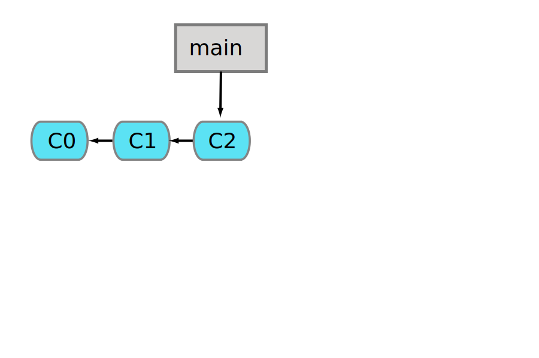
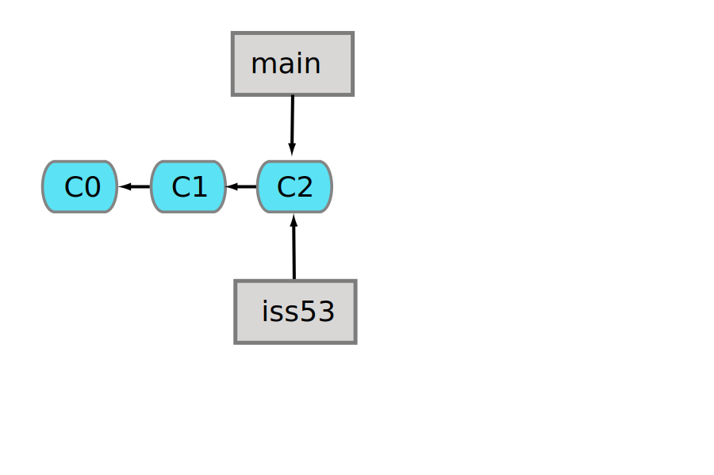

1 Branching and Merging
When you create a branch in the repository you enable two different development directions. later on you might want to merge the branches again, or you might want to discard one.
Different tools offer visual displays of these branches, here a screenshot from SourceTree:

1.1 Branching
To create or delete a branch use the branch command:
git branch -v # shows branches + last commits * master 7a98805 Merge branch 'iss49' iss50 782fd34 add scott to the readme # create a branch git branch BRANCH_NAME # delete a branch git branch -d BRANCH_NAME
Creating and deleting branches in itself doesn't not do anything. To actually use a branch you have to check it out:
# switch to a different branch git checkout BRANCH_NAME # shortcut: create a new branch + checkout git checkout -b foo
If this is a new, newly created branch, the files in your
working copy do not change. you can now work in this
branch as usual: add, commit, add, commit.
Now the branch is really different from other branches.
If you check out another branch now you will see the
files in your filesystem change!
Only checkout another branch when your working directory is clean, after you have commited all changes!
1.2 Behind the scene of a branch
before we branch

1.3 create a new branch
$git checkout -b iss53

1.4 switch to a branch
$git checkout iss53
1.5 which branch am I on?

1.6 work
# edit; commit(c3) $ git checkout master # edit; commit(c4) $ git checkout iss53 # edit; commit(c5)


1.7 merge!
$ git checkout master $ git merge iss53 Merge made by recursive. README | 1 + 1 files changed, 1 insertions(+), 0 deletions(-)
1.8 done

1.9 delete branch
git branch -d iss53
1.10 Merging in detail
git merge OTHER_BRANCH
merge the OTHER_BRANCH into the current (checked-out) branch
1.11 Conflicts
- when both branches contain changes for the same file
- or: trying two pushes containing changes for the same file
$ git status index.html: needs merge # On branch master # Changed but not updated: # (use "git add <file>..." to update what will be committed) # (use "git checkout -- <file>..." to discard changes in working directory) # # unmerged: index.html #
1.12 conflict markers in a file
</div> <<<<<<< HEAD:index.html <footer>contact: support@github.com</footer> ======= <div id="footer"> please contact us at support@github.com </div> >>>>>>> iss53:index.html </body> </html>
1.13 conflict markers in a files

1.14 how to resolve
- for all files:
- edit file
- try out your changes!
- git add FILE
- git commit